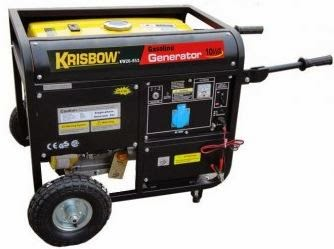
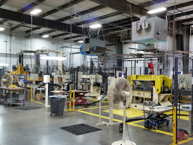

Jual Atap Lengkung di Blitar ☎ 0822 4582 0777 (Rinanti)
Tergantung setiap kebutuhannya, bagi bangunan yang megah mungkin beton akan menjadi pilihan. Keberadannya pun sudah menggeser kayu dan bahkan sewaktu-waktu dapat menggantinya. Oleh karena itulah kita pastinya membutuhkan atap di setiap pembangunan. Selain atap, adapula rangka atap yang berfungsi sebagai penyangga atap. Tidak tertarik dengan galvalum? Maka masih tersedia genteng metal yang akan saya bahas di pertemuan kita kali ini. Ada pula atap galvalum dengan bentuk unik seperti atap lengkung, gelombang dan lain sebagainya. Penasaran seperti apakah fungsi galvalum sebagai atap? Silakan simak artikel berikut ini.
Distributor & Supplier Atap Lengkung

Salah satu bagian penting pada bangunan baik untuk rumah, kantor maupun toko adalah atap lengkung Blitar. Baik atap lengkung tersebut terbuat dari besi, aluminium, galvalum, zincalum kayu dsb.
Bila atap lengkung sudah bocor maka kualitas dari atap lengkung tersebut akan diragukan. Salah satu jenisnya adalah atap lengkung Blitar. Sehingga membuat jenis atap lengkung tersebut mempunyai kelebihan dan kekurangannya sendiri.
Karena apabila atap lengkung tersebut sudah tertembus oleh air. Bahkan tidak sedikit yang rela mengeluarkan gocek yang tidak sedikit mengingat harganya yang sedikit lebih mahal dibandingkan atap galvalum dengan model biasa. Apabila anda sedang mencari atap lengkung Blitar lengkung dari galvalum yang satu ini. Bila anda ingin mengetahui harga dari setiap jenis atap lengkung Blitar maka anda cukup menghubungi kontak yang tertera pada website dis.or.id. Maka anda akan mendapatkan penawaran dengan harga terjangkau. Cukup hubungi kontak yang tertera pada dis.or.id dan dapatkan harga terjangkau untuk anda.
Info Pemesanan Selengkapnya
Google Maps: https://www.google.com/maps/d/u/0/viewer?mid=1jTQUf9ULWdUIa8iDLwabVtcOdrQf8Eme&ll=-7.272623401464149%2C112.6482284&z=17
Note: https://www.facebook.com/notes/distributor-of-industrial-supply/pabrik-supplier-atap-lengkung/1782710675362145/
Event: https://www.facebook.com/events/137280070316926/
Portfolio Produk: https://www.facebook.com/pg/DistributorOfIndustrialSupplyDIS/photos/?tab=album&album_id=1683772021922678
Distributor & Supplier Besi Beton

Besi beton adalah besi yang digunakan untuk penulangan konstruksi beton atau biasa dikenal sebagai fungsi badan bertulang. Besi beton ulir yaitu besi beton dengan bentuk permukaan khusus bentuk sirip melintang seperti ikan ataupun dengan rusuk memanjang dan memiliki pola tertentu yang dipilih pada proses produksinya. Pendidikan sangat penting karena digunakan dalam berbagai bentuk struktur bangunan baik bangunan kecil maupun bangunan besar seperti jembatan, Bendungan, terowongan dan masih banyak lagi. Berikut fungsi dan kelebihan dari besi beton yaitu memiliki tekanan yang kuat dan lebih tinggi dibandingkan dengan bahan lainnya, tahan terhadap api dan air dan juga memiliki struktur terbaik pada bangunan jika banyak bersentuhan dengan air, memiliki struktur yang cukup kokoh, tidak memerlukan biaya pemeliharaan yang cukup tinggi, dapat dirakit dalam bentuk yang sangat beragam dan masih banyak lagi kelebihan yang bisa anda dapatkan dengan menggunakan Besi beton.
Besi beton polos sangat jarang digunakan kecuali digunakan sebagai kolom.
Jika anda saat ini sedang membutuhkan besi beton berkualitas tinggi. Di sana anda akan mendapatkan berbagai macam jenis serta ukuran dari besi beton dengan harga yang cukup terjangkau dan mutu yang sangat terjamin.
Distributor & Supplier Steel Grating

Plat Grating tersebut dibuat dari jenis baja dengan kualitas yang tinggi kemudian dilas antara satu dengan yang lain. Untuk permukaan atas bagian kiri didesain bergerigi agar tidak membahayakan Anda. Selain untuk keamanan, juga untuk aksesoris kolam renang. Terbuat dari bahan yang hot deep galvanis sehingga grating tidak mudah berkarat meskipun terkena air hujan di setiap harinya.
Anda bisa langsung mendapatkan plat grating dengan kualitas terbaik dengan harga yang cukup terjangkau dengan hanya mengunjungi dis.or.id. Karena disana terdapat steel grating dengan harga yang sangat ekonomis pas dengan kantong anda.
Distributor & Supplier Pipa (Hitam/Gas, Galvanis)

Pipa hitam gas galvanis memiliki kekuatan yang tidak dapat diragukan, bagian luar pipa juga telah terlapis stainless steel sehingga menjadikannya tahan korosi. Pipa hitam gas galvanis banyak digunakan untuk keperluan area pertambangan minyak gas, untuk itu banyak juga yang mengira pipa hitam ini adalah pipa gas. Karena sudah terlapisi dengan stainless steel pipa ini dapat diaplikasikan pada segala kondisi cuaca di Indonesia. Anda bisa memesan pipa hitam ini dari ukuran ½ inci sampai 40 inci. Hubungi saja kontak kami untuk melakukan konsultasi mengenai kebutuhan pipa hitam gas galvanis bagi proyek industri anda.
Distributor & Supplier Kawat Bronjong/Gabion

Kawat bronjong dikenal sebagai anyaman yang terbuat dari kawat di mana tujuannya agar tebing yang tinggi tidak longsor. Hal ini disebabkan kawat ini dilapisi dengan galvanis. Pasalnya, jika kawat berkarat, maka kawat mudah putus dan rusak. Ini biasanya diterapkan pada tebing tinggi yang sangat rawan sekali terjadi longsor atau erosi karena air hujan. Selain itu, kawat ini juga digunakan pada tiang penyangga bangunan besar atau tiang penyangga jembatan. Ini bisa Anda lihat di pinggir-pinggir pantai. Kawat bronjong ini juga bisa berfungsi sebagai pengaut tebing miring di mana di atas tebing tersebut mungkin terdapat bangunan atau jalan.
Sehhingga, anda bisa leluasa memilih kawat bronjong mana yang susuai dengan yang anda butuhkan.
Distributor & Supplier WF H-beam

Saat ini, banyak orang yang ingin mencari jenis besi WF, terlebih ini zaman yang serba modern dan praktis. untuk harganya, besi WF tergolong cukup terjangkau dan tidak terlampau mahal. sementara untuk pemesanan juga mudah, Anda cukup menghubungi pihak produsen sudah bisa mendapatkannya. Sungguh mudah bukan?
Jika membawanya Anda juga tidak perlu khawatir keberatan karena besi ini lebih ringan dan praktis. Pembawaan bebannya pun juga sangat mudah dan terjamin.
Kini anda bisa mendapatkan besi WF H-beam dengan sangat mudah, caranya anda bisa langsung saja datang ke dis.or.id. Disana terdapat berbagai ukuran dari besi WF yang bisa anda pilih sesuai dengan kebutuhan anda. Disana anda bisa mendapatkan besi wf yang anda inginkan. Pastinya dengan harga yang sangat terjangkau.
Distributor & Supplier Expanded Metal

Expanded Metal adalah sebuah material dari baja yang dibentuk dengan model berlubang hampir mirip dengan anyaman. Fungsi expanded metal diantaranya untuk anak tangga pada tower dan ternyata banyak juga digunakan di dermaga/pertambangan/konstruksi lepas pantai.
Expanded Metal ada yang berbentuk diamond dengan model yang lebih menarik, kuat, ekonomis, serta tahan lama. Jenis ini dapat Anda gunakan sebagai pengaman partisi, pagar pembatas, penutup mesin, tanduk kendaraan, dinding panel, angin-angin dan masih banyak lagi.
Distributor & Supplier Plat (Hitam, Kapal, Bordes, Strip)

Apabila anda saat ini sedang mencari tempat atau toko yang jual plat hitam , anda dapat menemukannya di toko besi terdekat. Plat besi bordes juga dikenal dengan checkered plate. Dengan membeli secara online, anda akan lebih efektif dan efisien dalam melakukan pemesanan.
Oleh Karena itu dis.or.id dapat menjual plat besi yang murah dengan kualitas yang bagus. Segera hubungi nomor dis.or.id dan segera order karena dis.or.id adalah agen resmi yang langsung mengambil plat hitam ini dari pabriknya. Tak perlu lagi bingung mencari plat hitam yang murah dan berkualitas. Disini dis.or.id siap melayani anda untuk mencarikan plat yang anda inginkan.
Distributor & Supplier Floor Deck (Bondex)

Jika dibandingkan dengan triplek maupun bahan lain yang digunakan untuk membuat sebuah dek, ada beberapa kelebihan Floor Deck yang tidak dimiliki oleh beberapa bahan lain tersebut. Umumnya Floor Deck digunakan sebagai alas pada saat proses pembuatan lantai maupun atap dari dak beton. Panel Floordeck akan membentuk lantai kerja yang aman yang berfungsi untuk pelindung cuaca lantai bawahnya. Selain itu, Floor Deck ini bisa dipasang pada konstruksi baja ataupun beton serta didukung dengan data perencanaan. Pasak Floordeck yang berupa rusuk-rusuk panel tertanam dengan kuat didalam beton yang membuat seluruh panel menjadi tulangan positif searah yang sangat kuat.
Jika anda ingin mengetahui lebih lanjut mengenai floor deck ini, anda bisa langsung mengunjungi dis.or.id. Disana anda bisa mendapatkan info lebih lengkap dan detail mengenai harga dan spesifikasi dari floor deck.
Distributor & Supplier Atap Galvalum

Dewasa ini, banyak orang yang menggandrungi atap galvalum dikala pembangunan. Galvalum memiliki banyak kelbihan sehingga dia lebih banyak digunakan jika dibandingkan dengan kayu.
Banyak sekali jenis atap galvalum yang bisa kita dapatkan di pasaran. Anda pastinya sudah banyak melihat rumah menggunakan atap jenis ini.
Kayu dinilai kurang jika dibandingkan dengan galvalum. Namun, banyak anggapan yang mengatakan bahwa memasang galvalum akan membuat rumah akan terasa panas dan berisik. Ini dikarenakan seng menyebabkan rumah anda menjadi terasa panas. Jika dalam segi harga, kayu memang lebih murah.
Distributor & Supplier Truss Canal C

Sudah tahukah anda apa yang dimaksud dengan galvalum? Galvalum memang istilah yang kerap kali kita dengar dan umumnya memang sangat erat kaitannya dengan baja. Rayap tentunya tidak dapat menggerogoti besi yang satu ini. Kedua istilah tersebut merujuk pada sebuah benda yang sama. Cara pemasangannya besi kanal c dengan reng galvalum juga tidak boleh sembarangan. Galvalum memang kerap dijodohkan dengan kanal c, ini dikarenakan keduanya yang saling melengkapi. Jadi dengan kata lain, besi kanal C ini bisa dikatakan multi fungsi. Bagi anda yang sedang mencari besi kanal C maka saya merekomendasikan anda untuk mengujungi dis.or.id. Disana anda akan banya kmendapat info menarik seputar truss besi kanal c dan masih banyak lagi. Bila anda mencari kanal c atau truss maka anda sudah datang ke tempat yang tepat.
Distributor & Supplier Hollow Galvalum

Seperti yang telah saya tuliskan di beberapa artikel, salah satu fungsi dari Hollow Galvalum adalah sebagai rangka plafon atap rumah. Kayu pun sudah digeser, dikarenakan keberadaan hollow galvalum ini. Namun dominasi bahan sebagian besar menggunakan alumunium dengan presetase rata rata 55%.
Bila anda ingin membeli Hollow galvalum dengan harga terjangkau dan tentunya kualitas terjamin, simak ulasan kami ini. Rumah rumah masa kini, sudah banyak yang menggunakan rangka jenis hollow untuk pembuatan plafonnya. Pastikan untuk menghubungi kami saat ini juga. Dan apabila memungkinakan, pilihlah produk yang berstandar SNI dan bersertifikat. Kami akan mengirim barang pesanan anda sampai pada tujuan dengan aman, cepat dan tepat tujuan. Bukan harga agen ataupun perantara lainnya. Tertarik untuk membeli? Hubungi kami sekarang juga, karena kami memiliki penawaran menarik untuk anda.
Distributor & Supplier Seng Gelombang

Atap adalah hal penting yang harus diperhatikan pada setiap bangunan. Ia lebih mudah di pasang dan harga jual yang ekonomis dipasaran membuat seng gelombang memiliki banyak peminat. Meskipun begitu, nyatanya seng gelombang memiliki kekurangan yakni ia lebih cepat menyerap panas. Seng gelombang sekarang ini diburu banyak masyarakat untuk menutup bagian atap bangunan mereka. Saking pentingnya, pasti dimana ada bangunan maka disitu ada atap yang menaunginya.
Tetapi, janganlah ragu dengan hal demikian. Seng gelombang dengan warna ataupun transparan amatlah awet bila dibandingkan dengan bahan pembuat atap lainnya.
Distributor & Supplier Plat Seng

Biasanya plat galvanis dijual lembaran atau per meter. Harga plat galvanis lembaran akan lebih mahal dibandingkan dengan harga per meter.
Plat galvanis ukuran 3mm memang dikategorikan ke ukuran paling tebal, sedangkan 1mm dapat dikatakan adalah titik tengah dari ketebalan plat. Namun jika anda hanya sekedar menggunakan nya untuk kebutuhan renovasi (dalam jumlah yang sedikit) anda dapat membeli yang per meter. Harga plat galvanis lembaran tentu nya akan lebih mahal jika dibandingkan yang per meter.
Plat galvanis bisa anda dapatkan dengan membeli lembaran ataupun per meter, harga plat galvanis ditentukan dari ukuran yang anda inginkan.
Distributor & Supplier Genteng Metal

Kami adalah distributor genteng metal, tersedia berbagai ukuran dan varian genteng metal. Sebelum itu, kami akan menjelaskan apa itu genteng metal dan genteng metal pasir. Selain itu genteng metal dinilai lebih anti bocor. Selain itu genteng metal dinilai lebih anti bocor. Apakah mitos itu benar? Faktanya beberapa jenis genteng metal memang menyebabkan rumah terasa lebih panas dan berisik ketika hujan, namun kabar baiknya bila anda memilih menggunakan genteng metal pasir terbaik anda dipastikan akan terhindar dari dua hal tersebut. Warnanya pun beragam sehingga akan membuat rumah maupun bangunan yang dinaunginya menjadi terlihat lebih modern dan berbeda dibandingkan dengan rumah-rumah lain di sebelahnya.
Karena kepuasan dan kepercayaan pelanggan adalah segalanya bagi kami.
Distributor & Supplier Besi Wiremesh

Nama lain dari besi wiremesh ini adalah besi anyam. Ada banyak jenis besi wiremesh, diantaranya adalah besi wiremesh dengan desain kotak dan jajar genjang. Besi wiremesh bisa anda manfaatkan untuk berbagai kebutuhan, misalnya saja untuk kebutuhan konstruksi penguat dak beton, plat lantai, dan juga anak tangga. Setiap jenis besi wiremesh diperuntukkan untuk kebutuhan yang berbeda-beda, untuk itu anda harus memilih jenis wiremesh sesuai dengan kekuatannya. Pada umumnya, kebutuhan besi wiremesh ditentukan oleh tingkat bangunan, bangunan yang bertingkat menggunakan wiremesh dengan ketebalan 8 – 10.
Distributor & Supplier Pagar BRC

Pagar BRC dibuat dari besi beton berukuran diameter 5 mm – 8 mm sehingga tergolong kuat sebagai pagar pengaman. Setiap potongan besi tersebut kemudian digabungkan dengan bantuan mesin las wiremesh. Apalagi mengingat kekuatan pagar BRC tidak dapat diragukan lagi, karena pagar ini diproduksi dengan baja bertegangan tinggi U55 grade dengan tegangan ijin 2900kg/cm2 sekitar 2. Lapisan galvanis yang terdapat pada pagar BRC menjadikannya tahan akan korosi maupun karat, tak heran bila umur pengaplikasian dari pagar BRC bisa mencapai 10 tahun. Jika Anda membutuhkan pagar BRC ini segera kunjungi situs resmi kami untuk informasi lebih detail.
Distributor & Supplier Kawat Loket, Kawat Harmonika

Dengan bentuknya seperti anyaman yang kokoh, anda dapat memanfaatkan kawat loket harmonika untuk berbagai keperluan. Kawat loket harmonika juga tahan karat, maka tak mengejutkan bila ia tahan dalam waktu yang lama. Jika anda membutuhkan kawat loket harmonika ini, tentu saja kami telah mempersiapkan produk ini untuk anda, telah tersedia kawat loket dengan ukuran bermacam-macam dari diameter 1,5 mm sampai 4 mm dan ukuran lubang 20 mm sampai 70 mm. Untuk informasi lebih lanjut, anda dapat menghubungi kami! Ukuran lebar maksimal yang kami terima adalah 3 meter.
Distributor & Supplier CNP & UNP

Besi yang sering diaplikasikan untuk keperluan sambungan dan dudukan atap adalah besi kanal UNP, bentuk besi ini melengkung dan membentuk huruf U. Selain sebagai material konstruksi sambungan, besi kanal U banyak digunakan untuk kebutuhan penutup dinding / girts. Apabila anda amati sekali lagi, sebenarnya pemanfaatan dari besi UNP hampir mirip dengan WF, tapi karena besi UNP memiliki bentuk yang melengkung masih jarang orang yang memanfaatkan material ini untuk keperluan kolom bangunan. Membahas mengenai besi UNP pasti terasa kurang jika tidak membahas kembarannya pula, besi CNP. Banyak orang yang menyebut besi CNP ini sebagai profil C karena bentuknya melengkung seperti huruf C, meskipun begitu besi UNP dan CNP adalah material konstruksi yang berbeda. Besi CNP sangat fleksibel karena materialnya dapat dimodifikasi dengan menggunakan plat koil.
Distributor & Supplier Besi Siku

Salah satu material besi baja yang memiliki banyak manfaat untuk kehidupan ini adalah besi siku, jenis material ini bahkan bermanfaat untuk kebutuhan rumahan. Besi siku menjadi salah satu material yang dapat diandalkan sebagai besi penyangga. Pada umumnya besi siku yang banyak digunakan dalam kehidupan sehari-hari adalah besi siku sama sisi, dimana ia membentuk dua garis tegak lurus yang membentuk 90 derajat. Ukuran panjang dari besi siku yang kami sediakan adalah panjang 6 meter, dan ketebalan yang bisa anda sesuaikan dengan kebutuhan. Untuk info selengkapnya, anda dapat menghubungi kontak yang telah tersedia. Produk besi siku yang kami tawarkan cocok untuk beragam keperluan, baik rumahan, konstruksi, industri dan sebagainya. Segera hubungi kontak kami untuk mengetahui spesifikasi besi siku yang anda butuhkan.
Distributor & Supplier Hollow (Hitam, Galvanil, Galvanis)

Sekarang ini besi hollow pemanfaatannya sudah melebihi kayu, meskipun terbuat dari besi kualitasnya pun tidak dapat diragukan lagi.Sekarang sudah banyak orang yang beralih pemanfaatan dari kayu menjadi menggunakan besi hollow.Banyak orang yang mulai beralih dari pemanfaatannya yang menggunakan kayu beralih pada hollow hitam galvanil.Besi hollow saat ini menjadi material pengganti kayu yang sangat baik. Apalagi jika mengingat menggunakan besi hollow akan membuat pengerjaan konstruksi selesai lebih cepat. Tentu saja hal ini karena kelebihan yang ditawarkan oleh besi hollow sendiri tidak dimiliki kayu, material yang kokoh, pengerjaan cepat, dan tidak mudah rapuh. Tentu saja hal ini dikarenakan kekuatan yang dimiliki hollow galvanis tidak bisa dibandingkan dengan kayu, material ini juga lebih mempercepat pembangunan konstruksi. Besi hollow memiliki kekuatan yang lebih kokoh dan dapat mempercepat pekerjaan konstruksi karena strukturnya yang mudah diatur. Anda bisa menghubungi kontak yang telah tersedia untuk informasi produk lebih detail. Manfaat besi hollow dalam kehidupan ini banyak sekali, diantaranya untuk keperluan pagar, teralis, pintu besi, dan berbagai kebutuhan lain. Butuh info lebih lanjut? Anda dapat menghubungi kontak yang telah tersedia. Untuk informasi detail mengenai panjang dan harganya, segera hubungi kami. Anda bebas untuk menentukan ukuran pesanan besi hollow yang dibutuhkan pada kami. Jika anda tertarik memesan besi hollow ini maka tentukan dulu total kebutuhan anda, hubungi kami segera untuk info lebih lanjut!Selain sebagai pengganti material kayu, besi hollow yang kami jual dapat anda manfaatkan untuk kepentingan teralis, pintu besi, pagar, dan lain sebagainya.Bagi anda yang membutuhkan besi hollow, anda dapat menghubungi kami, besi hollow yang kami tawarkan cocok untuk kebutuhan pagar, pintu besi, teralis, dan lain sebagainya.Selain sebagai pengganti material kayu, besi hollow banyak dimanfaatkan untuk kebutuhan pintu besi dan teralis. Anda dapat menghubungi kontak kami untuk melakukan perhitungan kebutuhan hollow hitam tersebut. Hubungi kami untuk lakukan konsultasi kebutuhan besi hollow dan panjang yang dibutuhkan. Bagi anda yang membutuhkan besi ini, kami dapat membantu anda untuk menentukan ukuran besi yang diperlukan dengan menghubungi kontak kami!
Distributor & Supplier Pipa Pancang

Untuk yang di bahas pertama adalah pipa pancang. Terutama bagi Anda yang sedang membangun proyek di atas permukaan laut, tentu saja ini akan sangat membantu. Hal ini bertujuan untuk memudahkan penyesuaian. Di sini Anda akan mendapatkan pipa pancang berkualitas yang siap di gunakan.
Jasa Pondasi Bor (Strouss/Borepile)

Dalam hal ini, sekarang Anda tidak pelru khawatir karena ada banyak jasa yang melayani jasa pondasi bor. Sedangkan untuk kualitas hasil pengeboran nya pun tidak perlu di pertanyakan karena bisa di jamin sempurna dan sangat tinggi. Hanya saja selama proses pengeboran akan muncul suara bising meskipun tidak di sertai getaran. Dalam prosesnya, pengeboran ini akan menimbulkan suara bising karena mesinnya yang sedang bekerja. Dalam hal ini jika tidak ingin menggunakan jasa bor, Anda bisa membeli mesinnya. Sebenarnya, jika selain Anda menggunakan jasa pengeboran, Anda pun bisa membeli mesin bor sendiri. Sedangkan untuk kualitas pun tidak jauh berbeda sehingga tidak perlu di khawatirkan.
Distributor & Supplier Genset (New/Second)

Sejauh ini, genset atau generator set uang sudah banyak di aplikasi kan dengan bahan bakarnya yang berupa solar tentu saja juga sudah cukup terkenal. Sedangkan dalam pengaplikasian tersebut, tenaga dari genset di hasilkan dari bahan bakar solar. Dalam penjualan nya, genset ini biasanya ada dua pilihan yaki dalam kondisi baru maupun second atau bekas.
Dengan harga genset yang cukup tinggi, memang akan lebih ringan jika membeli genset yang sudah second. Akan tetapi, meski bekas, jangan khawatir karena kualitasnya masih cukup baik dan hampir menyamai genset yang baru. Bagaimana tidak, jika kualitas yang di tawarkan saja hampir sama sedangkan harganya lebih rendah.
Distributor & Supplier UPS

UPS saat ini sebenarnya telah banyak di gunakan. Sedangkan pengertian UPS sendiri merupakan salah satu dari sekian banyak alat elektronik yang mampu di jadikan sebagai sumber listrik sementara manakala sumber utamanya terputus. Dalam hal inI tentu saja akan sangat penting untuk memilikinya. UPS sendiri secara umum sebenarnya cukup penting untuk di miliki. Untuk jenis-jenisnya, UPS terdiri dari beberapa variasi. Bukan hanya kualitas spesifikasi yang berbeda, akan tetapi juga kapasitas listrik yang bisa di simpan. Karenanya, ketika Anda membeli UPS ini, sebaiknya memastikan terlebih dahulu seberapa besar kapasitas yang Anda butuhkan. Jadi ketika membelinya sebaiknya Anda pastikan sesuai dengan kebutuhan. Sedangkan dalam penjualan, di sini kami menawarkan UPS dengan kualitas terjamin dan harga memadai.
Distributor & Supplier Forklift (Second)

Dalam setiap industri, baik itu industri kecil, menengah, hingga yang besar, tentu saja akan banyak yang menggunakan forklif. mengimbangi akan hal itu, tidak heran jika kini penjualan forklif ada di mana-mana. Sedangkan dalam pembeliannya, bisa memilih baik yang baru ataupun yang bekas. Nah, kalau di DIS sendiri Anda akan banyak menemukan barangnya dengan kualitas bagus sekalipun second. Selanjutnya, jika memang suatu saat forklif tidak di gunakan , bisa Anda jual pada distributor di sekitar dengan mudah.
Jasa Pembuatan Moulding Inject

Anda sedang bingung untuk membuat plastik yang tepat sebagai wadah salah satu produk Anda, maka jangan khawatir karena banyak jasa yang bisa di manfaatkan untuk pembuatannya termasuk di DIS. Sedangkan untuk masalah kuantitas jangan khawatir karena berapa pun kebutuhan Anda terhadap moulding inject, penawar jasa di sini selalu siap membantu. Jika ingin mendapatkan moulding inject dengan kualitas terbaik, maka memang di sini lah tempatnya. Apalagi jika Anda kebingungan masalah ide, jangan khawatir karena banyak pilihan yang bisa di jadikan inspirasi. Anda pun bisa memilih kira-kira ide seperti apa yang paling pas untuk produk Anda sehingga pembuatannya bisa tepat sasaran.
Jasa Pembuatan Sparepart Mesin Produksi / Alat Berat

Sparepart tentu saja sudah tidak asing lagi di dunia permesinan. Bukan hanya dalam penggunaannya, akan tetapi juga pembuatannya. salah satunya seperti yang di tawarkan di DIS. Jika telah memilih jasa terpercaya, maka hasilnya pun akan terjamin dan semakin aman. Sedangkan untuk masalah harga, tentu saja sangat variatif.
Jasa Service Elektronik (Kompor Gas, Dispenser, Mesin Cuci)

Kini elektronik memang semakin banyak di gunakan di kalangan masyarakat. Padahal sebenarnya banyak penawar jasa yang bersedia dan sanggup memperbaiki setiap kerusakan elektronik sebagai penyeimbang semakin bekembang nya teknologi. Dengan service ini, maka ketika ada masalah dengan barang Anda, jika belum parah bisa kembali berfugsi seperto semula. Untuk kualitas service yang di tawarkan, jangan khawatir karena kualitasnya sangatlah tinggi. Barang yang bermasalah pun bisa berfungsi seperti sedia kala. Sedangkan untuk service ini sebenarnya tidak hanya untuk barang-barang bermasalah saja melainkan juga untuk pegecekan barang elektronik Anda sehingga akan tetap aman dan lancar di gunakan. Selain untuk perbaikan, Anda pun bisa juga hanya melakukan pengecekan tanpa keluhan sebagaimana service pada umumnya.
Nah, apakah anda sudah mengerti betapa pentingnya atap untuk keperluan setiap pembangunan? Tentu sangat penting bukan? Atap sangat dibutuhkan dalam setiap pembangunan sehingga membuatnya sering dicari. Hanya bangunan yang terbengkalai yang tidak mempunyai atap. Tak terkecuali rumah dengan ukuran paling kecil sekalipun, pasti mempunyai atap sebagai komponen utama. Kebutuhan primer seperti atap, memang tidak dapat diragukan lagi fungsinya. Karena rumah paling kecil sekalipun pasti mempunyai atap di atasnya. Dapatkan pula info menarik tentang bahan-bahan bangunan yang anda cari. Maka, dengan senang hati kami akan membantu anda.